Equipe FlorestaSC
Ciclo 3 (2022-2027)
FlorestaSC: Inventário florestal, Mapeamento e Educação florestal
Endereço: Universidade Regional de Blumenau – FURB. Departamento de Engenharia Florestal. Rua São Paulo, 3250. Bairro Itoupava Seca. CEP: 89030-000. Blumenau-SC.
Fone: (47) 3221-6100, 6040, 6148, 6038.
Email: florestasc@furb.br
Coordenador Geral:
Dr. André Luís de Gasper
Universidade Regional de Blumenau – FURB
Professor FURB – algasper@furb.br
Equipe - Inventário Florestal
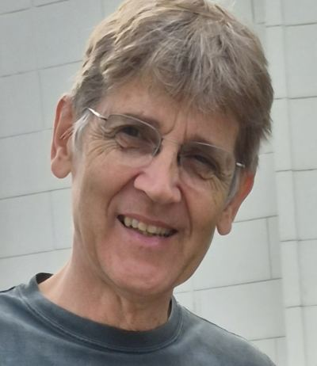
Dr. Alexander Christian Vibrans
Professor FURB - Coordenador de pesquisa do FlorestaSC
acv@furb.br
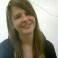
Pesquisadora FURB - Gestão de dados e geoprocessamento
dlingner@furb.br
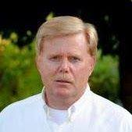
Dr. Ronald McRoberts
Pesquisador University of Minnesota Twin Cities - Inventário florestal e sensoriamento remoto
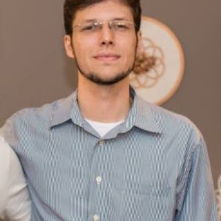
Pesquisador FURB - Inventário, biometria e ecologia florestal
Doutorando em Engenharia Florestal (UDESC)
laioo@furb.br
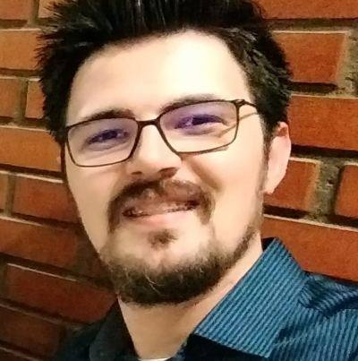
Professor FURB - Matemática e Doutor em Engenharia Ambiental
jgmuller@furb.br
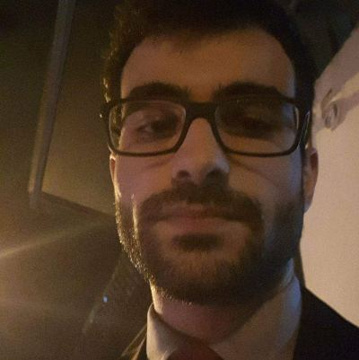
Pesquisador FURB - Ecologia vegetal e modelagem macro-ecológica
Doutorando em Recursos Florestais (Esalq)
ggrittz@furb.br
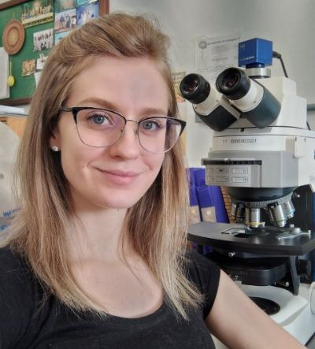
MSc. Giesta M.Olmeda Machado
Bióloga e Mestre em Biodiversidade - Herbário FURB
gmomachado@furb.br
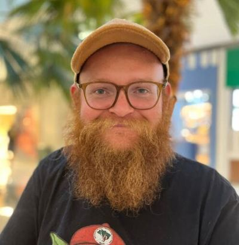
Dr. Maurício Rodrigo Schmitt
Biólogo e Doutor em Geociências (UFRGS) - Herbário FURB
mrschmitt@furb.br
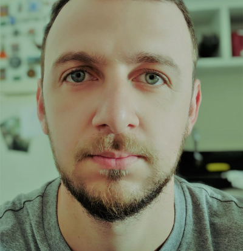
Dr. Thiago Caique Alves
Químico e Doutor em Engenharia Ambiental (FURB) - Herbário FURB
tcalves@furb.br
Equipe - Mapeamento
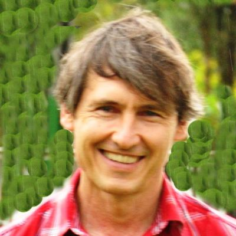
Professor FURB - Geoprocessamento e sensoriamento remoto
refosco@furb.br
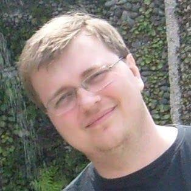
Professor UDESC - Geo/Sensoriamento remoto
veraldo.liesenberg@udesc.br
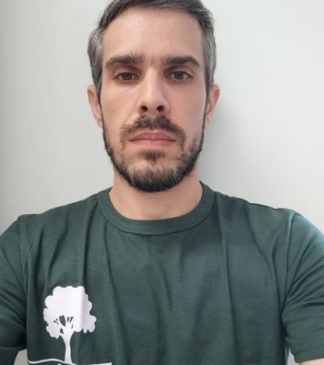
Pesquisador FURB - Coleta e análise de dados multiespectrais e LiDAR
muriloschramm@furb.br
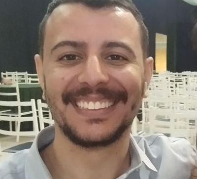
Luiz Carlos Lopes da Silveira
Pesquisador FURB - Análise de dados multiespectrais e LiDAR
lclsilveira@furb.br
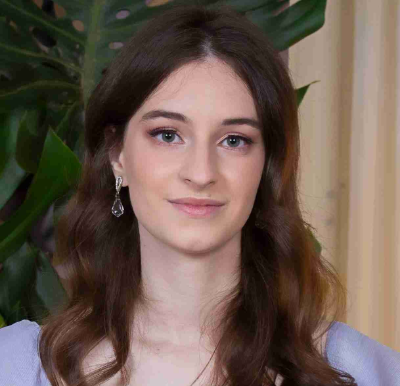
Laura Isabela Seibt
Bolsista Ciências da Computação - Sensoriamento Remoto
liseibt@furb.br
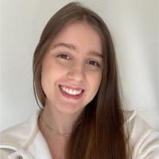
Luana Caroline Schmidt
Graduanda em Ciências da Computação
lcschmidt@furb.br
Equipe - Educação Florestal
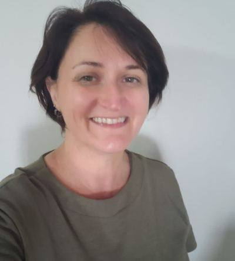
Dra. Daniela Tomio
Professora FURB - Educação Científica e Tecnológica
Divulgação científica
dtomio@furb.br
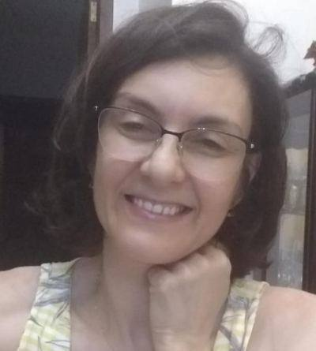
Dra. Simone Leal Schwertl
Professora FURB - Ensino de Ciências
sileal@furb.br
Bióloga - Taxonomia
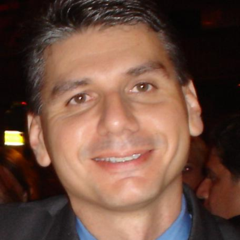
Professor FURB - Ciências da Computação
Divulgação científica com uso de tecnologias digitais
mclopes@furb.br
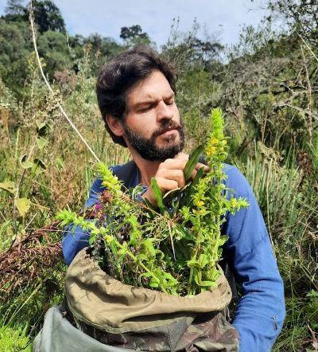
Msc. Nando Matheus Rocha
Biólogo Educador
nmrocha@furb.br
Caracterização da Diversidade Genética
Endereço: Universidade do Estado de Santa Catarina - UDESC. Departamento de Engenharia Florestal. Laboratório DNA-UDESC. Av. Luiz de Camões, 2090. CEP: 88520-000. Lages-SC.
Fone: (49) 2101-9103
Equipe
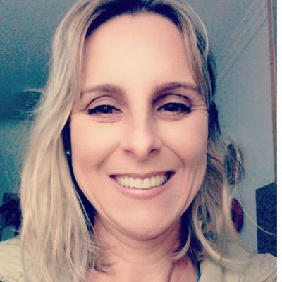
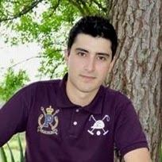
M.Sc. Eng. Flor. Newton Clóvis F. da Costa
M.Sc. Juliano Pereira Gomes
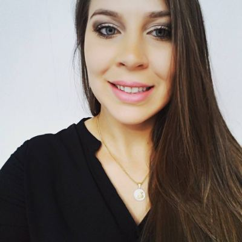
Pós-Dourtorando UFSC
Levantamento Socioambiental
Endereço: EPAGRI/Itajaí. Estação Experimental. Rodovia Antônio Heil, Km 6, C.P. 277. CEP: 88301-970. Itajaí-SC.
Fone: (49) 3341-5244
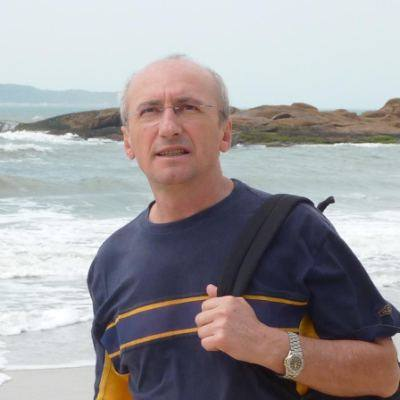
Dr. Luiz Toresan
EPAGRI/CEPA
toresan@epagri.sc.gov.br
Desenvolvimento de Sistemas
Endereço: EPAGRI/CIRAM. Rodovia Admar Gonzaga, 1347. CEP: 88034-901. Florianópolis-SC.
Fone: (49) 3665-5010
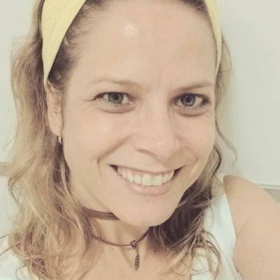
MSc. Juliana Mio de Souza
Geoprocessamento
julianasouza@epagri.sc.gov.br
manu@epagri.sc.gov.br
Equipe IFFSC
Ciclo 1 (2007-2011)
Meta 2 - Inventário dos Remanescentes Florestais
Coordenação
- Dr. Alexander Christian Vibrans (FURB) - acv@furb.br
Equipe Científica
- Dr. Alexandre Uhlmann (FURB/EMBRAPA)
- Dr. Lauri Amândio Schorn (FURB)
- Dra. Lúcia Sevegnani (FURB) (in memoriam)
- MSc. Moacir Marcolin (FURB)
- Dra. Karin Esemann de Quadros
- Dr. Júlio Cesar Refosco
Consultores
- Dra. Annete Bonnet
- Dr. João André Jarenkow (UFRGS)
- Dr. Doádi Antônio Brena (UFSM)
- Dr. Solon Longhi (UFSM)
- Dra. Vanilde Citadini-Zanette (UNESC)
Equipe Técnica
- Processamento de Dados: Engenheiros Florestais Débora Vanessa Lingner e Shams Sabbagh, acadêmicos Raphaela Noêmia Dutra, Adilson Luiz Nicoletti, Alexandre Amilton de Oliveira, Claudia Mariana Kirchheim da Silva, Murilo Schramm da Silva e Stefanie Cristina de Souza.
- Herbário: Biólogos André Luís de Gasper e Morilo José Rigon Junior , acadêmicos Camila Bernadete Ptermann, Bruno Burkhardt, Kamila Vieira, Aline Haverroth, Arthur Vinicius Rodrigues, Luana Silveira e Silva.
- Taxonomia: Dr. Marcos Sobral (UFMG)
- Colaboradores Taxonomia: Alain Chautems (Gesneriaceae) [Conservatoire et Jardin botaniques de la Ville de Genève]; A.A. Schneider (Asteraceae - Baccharis), Hilda Maria Longhi-Wagner (Poaceae), Mara Rejane Ritter (Asteraceae - Mikania) e Rafael Trevisan (Cyperaceae) [ICN]; Alexandre Quinet (Lauraceae), Ângela Vaz (Leguminosae), Ariane Luna Peixoto (Monimiaceae), Cláudio Nicoletti (Orchidaceae, Dilleniaceae e Ochnaceae), Denise Pinheiro da Costa (Briófitas), Elsie Guimarães (Piperaceae, Loganiaceae, Boraginaceae e Gentianaceae), Fátima Freitas (Myrsinaceae e Cactaceae), Marcus Nadruz (Araceae e Elaeocarpaceae), Mássimo Bovini (Malvaceae, Bombacaceae, Tiliaceae e Sterculiaceae), Rafaela Campostrini Forzza (Bromeliaceae), Sheila Profice (Acanthaceae) e Vidal Mansanno (Leguminosae) [JBRJ]; Adriana Lobão (Annonaceae) [UFES]; Alexandre Salino (Pteridófitas) [UFMG]; Eric Smidt (Orchidaceae), Renato Goldenberg (Melastomatacea) e Werner Siebje Mancinelli (Orchidaceae) [UFPR]; Andrea Costa (Bromeliaceae) [UFRRJ]; Maria Leonor D´El Rei Souza (Melastomataceae) [UFSC]; Rodrigo Augusto Camargo (Fabaceae) [UNICAMP].
- Apoio Administrativo: Dirce Harnisch, Maria J. Santana Barros e Solange Maria Krug.
- Engenheiros de Campo: Andres Krüger, Carlos Anastácio Junior, Guilherme Klemz e Ronnie Schmitt.
- Biólogos de Campo: Alexandre Korte, Anita Stival dos Santos, Marcio Verdi, Susana Dreveck, Juliane Luzia Schmitt e Tiago João Cadorin.
- Escaladores: José Francisco Torres, Simone Silveira, César Pedro Lopes de Oliveira, Eder Caglione, Rafael Borsoi Saulo e Felipe Borsoi Saulo.
- Auxiliares: Francisco Estevão Carneiro, Claus Leber, Herison José de Melo, Jefferson Tachini, Ary Francisco Mohr, Diego Henrique Klettenberg, Francys João Balestreri, Evair Legal,Simone Andrade,Caroline Cristofolini, Ademar Hilton Kniess, Bruna Grosch, Douglas Meyer, Nayara Lais de Souza, Ricardo Zimmermann, Robson Carlos Avi.
Estagiário
- Jefferson Tacchini
Mestrandos
- Débora Vanessa Lingner
- Gisele Müller Amaral
- Suelen Schramm Schaadt
- Vanessa Bachmann
Meta 3 - Avaliação da diversidade genética
- Prof. Dr. Maurício Sedrez dos Reis (CCA/ UFSC) - msreis@cca.ufsc.br
- Prof. Dr. Adelar Mantovani (CAV/ UDESC) - mantovani@cav.udesc.br
Equipe de Laboratório
- M. Sc. Eng. Agrônomo Ricardo Bittencourt (Responável)
- M. Sc. Eng. Florestal Alison Nazareno Gonçalves
- M. Sc. Eng. Agrônomo Juliano Zago da Silva
- M.Sc. Bióloga Samatha Filippon
- Bióloga Cristina Sant’Anna
- Acadêmico Tiago Montagna
- Acadêmica Roberta Duarte
- Acadêmica Ivone de Bem
- Acadêmica Beatriz Bez
Equipe de Campo
- Eng. Florestal Felipe Steiner (Responsável)
- M.Sc. Biólogo Glauco Schussler
- Eng. Florestal Alex Zechinni
- Eng. Agrônoma Andréa Gabriela Mattos
- Biólogo Lucas Milanesi
- Acadêmico Fernando André Loch Santos da Silva
- Acadêmico Caio Darós Fernandes
- Acadêmico Georg Altrak
- Acadêmico Douglas Loch Santos da Silva
- Acadêmico Luis Guilherme
Meta 4 - Levantamento Socioambiental
- MSc. Juarez José Vanni Muller (EPAGRI/EEI) - jmuller@epagri.sc.gov.br
- Alécio Borinelli (EPAGRI/EEI)
- MSc. Airton Rodrigues Salerno (EPAGRI/EEI)
- MSc. Antônio Amaury Silva Júnior (EPAGRI/EEI)
- Dr. Horst Kalvelage (EPAGRI/EEI)
- MSc. Juliane Garcia Knapik Justen (EPAGRI/Regional de Rio do Sul)
- Dr. Luiz Toresan (EPAGRI/CEPA)
- Neri Samuel Dalenogari (EPAGRI/EEI)
- MSc. Pedro Nicolau Serpa (EPAGRI/EEI)
- MSc. Teresinha Catarina Heck (EPAGRI/EEI)
Meta 5 - Elaborar e implementar um Sistema de Informações
- MSc. Juliana Mio de Souza (Epagri/Ciram) - julianasouza@epagri.sc.gov.br
- Joelma Miszinski, Esp. (Epagri/Ciram) - joelma@epagri.sc.gov.br
- Desenvolvimento: Emanuela S.P. Pinto
- Desenvolvimento: Fernanda Maraschin
- Redes/Servidores: Anelise Newbery
- Banco de Dados: Eduardo Nathan Antunes
- Geoprocessamento: MSc. Suely Lewenthal Carrião
Página migrada de floresta.sc.gov.br.